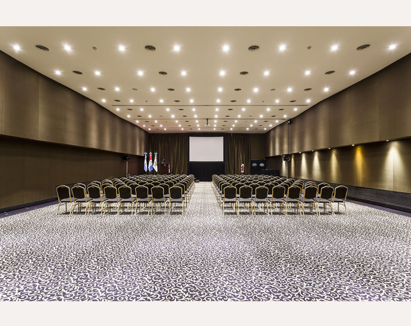

Sede del Congreso
El congreso se realiza en el Ros Tower Hotel, en pleno centro de Rosario, a pasos del Río Paraná.
Hotel 5 Estrellas
Espacio, confort y diseño moderno
El Ros Tower Hotel cuenta con diseño de vanguardia y más de 3.000 m² de espacio exclusivo para convenciones y eventos, garantizando la comodidad y la infraestructura técnica necesaria para recibir a toda la comunidad podológica nacional e internacional en un solo lugar.
Visitar sitio oficial del Ros Tower
Cómo llegar
Planificá tu llegada a la sede del evento en Rosario
Aeropuerto Internacional Rosario (AIR)
Aprox. 15 km / 30-40 min en taxi o transfer directo.
Terminal de Ómnibus Mariano Moreno
Aprox. 3.5 km / 10-15 min en taxi o transporte urbano.
Accesos en auto y estacionamiento
Fácil acceso desde Av. Circunvalación y Av. Belgrano. El hotel cuenta con servicio de cochera y valet parking.